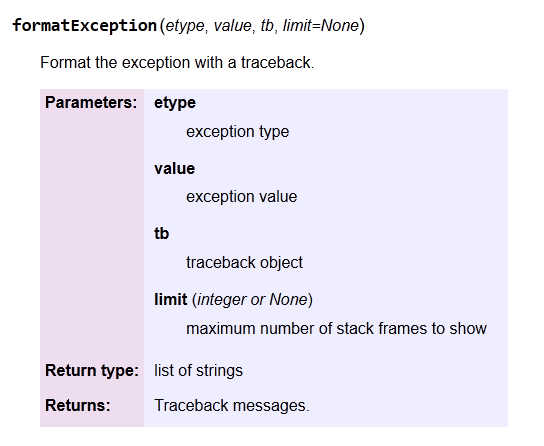

ObsPy & Use Cases
September 07, 2012
Program
- General Introduction / Programming Paradigms (Robert)
- Reusing C Code (Moritz)
- First Steps: Basic Classes and Their Usage (Lion)
- Practical: Processing Workflow (Tobias)
- Use Case: pSysmon (Stefan)
- Use Case: Wavesdownloader / TMT (Fabrizio)
- Submitting Code to ObsPy (Tobias)
ObsPy: Introduction
Robert Barsch
barsch@egu.eu
September 07, 2012
Table of Contents
- General Introduction
- Extreme Programming (XP)
ObsPy: General Introduction
ObsPy: General Introduction
- Python toolbox for seismologists
- Modular architecture
- Waveform data: DATAMARK, GSE1/2, MiniSEED, SAC, SEISAN, SEG2, SEGY, Q/ASCII, WAV
- Inventory data: Dataless SEED, XML-SEED, RESP, SAC PZ
- Data request clients: ArcLink/WebDC, IRIS DMC WS, SeisHub, NERIES/Seismic Data Portal WS, Earthworm, SEEDLink (experimental)
- Signal processing: Filters, triggers, instrument correction, rotation, array analysis, beamforming
- Waveform indexer
ObsPy: General Introduction
- Open source (LGPL or GPL)
- Test-driven development (TDD), currently more than 470 unit tests
(http://tests.obspy.org)
- Reliance of well-known third-party libraries (numpy, scipy, matplotlib)
- Reusing well established code, e.g. libmseed, GSE UTI
- Automatic generated API documentation
- Binary distributions: Python Package Index (PyPI), Windows Installer (&
Debian/Ubuntu packages)
- Central source code repository, community webpage, tutorials, installation
instructions, ticket system, mailing list
ObsPy: General Introduction
Statistics: ObsPy trunk
| | lines of code | lines of comments |
|---|
| Python | 41687 | 28278 |
|---|
| C | 18946 | 5287 |
|---|
| Fortran 77 | 1820 | 857 |
|---|
- devs w/ repository write access: 25
- first check-in: 08/2007
- # of check-ins: 4051
- subscribers user mailingliste: 172
- used on, e.g. RasperyPI till SuperMUC
Extreme Programming (XP)
Extreme Programming
- software development methodology by Kent Beck (1999)
- general XP Concepts
- Simplicity
- Communication
- Feedback
- Courage
- derived concreted XP Principles & Practices
XP Concepts
Simplicity
- “The art of maximizing the amount of work not done”
- encourages simplicity in software
design and coding in order to minimize the cost of change
- heart of XP – affects all other concepts significantly
XP Concepts
Communication
- source code documentation
- code communicates best when the concept of simplicity is applied.
- source code comments
- self-documenting code
- unit tests are required
- communication between developers and/or end users
- should be done on a regular basis sharing and
validating ideas and further project requirements
XP Concepts
Feedback
- short release cycles resulting in immediate feedback of end users
- feedback on the quality of code via unit tests
- bugs are best communicated by unit tests that proves the failure of a certain piece of code
- heavily relies on all other three concepts
XP Concepts
Courage
- to take time to try out different approaches
- to be able throw code away for the sake of simplicity
- to report bugs or request new features
- to contribute there own code or even get a team member
XP Principles & Practices
None of the following principles are completely new – most are as old as
programming itself and its techniques have been proven over decades.
- The Planning Game
- Simple design & Refactoring
- Documentation*
- Unit Tests*
- Test-driven development (TDD)*
- Pair programming
- Collective ownership
- Coding standards
XP Principles & Practices
The Planning Game
- scope of the next release is constantly changed to the current
need
- usage of ticketing system to reorder and prioritize identified short term tasks
in order to reach long term goals
- ObsPy:
Simple design & Refactoring
- constant design improvement in order to fit the concept of
simplicity or add further flexibility
- but elegant simple code needs experience and effort
XP Principles & Practices
Pair programming
- two or more programmers together directly reviewing each others work
- direct communication between developers increases the overall productivity and
motivation
- ObsPy: sprints, mailing lists, ticket system
Collective ownership
- any developer can change any code at any time
- ObsPy:
- public available source code from the very beginning
- open source
- fast at giving contributers write access
XP Principles & Practices
Coding Standards
- PEP 8 (Style Guide for Python Code)
- PEP 257 (Docstring Conventions)
- ObsPy specific modification
- Import Conventions
- Naming Conventions
- Doc Strings
XP Principles & Practices
Documentation
- Source code comments and self-documenting code are key factors for the
readability of code ⇒ software without it is plain useless
- Docs or it doesn't exist!
- ObsPy:
doctest*sphinx using reStructuredText (reST) syntax
XP Principles & Practices
Documentation: reStructuredText Example
def formatException(etype, value, tb, limit=None):
"""
Format the exception with a traceback.
:param etype: exception type
:param value: exception value
:param tb: traceback object
:param limit: maximum number of stack frames to show
:type limit: integer or None
:rtype: list of strings
:return: Traceback messages.
"""
pass
XP Principles & Practices
Documentation: reStructuredText Output

Testing
Table of Contents
- Why testing?
unittestdoctest- Test-driven development (TDD)
- ObsPy Test Infrastructure
obspy-runtests- Buildbot
- Coverage
Untested code is broken code
Philipp von Weitershausen and Martin Aspeli
Why testing?
Pros:
- safes time: faster pinpointing of errors, less usage of debugger
- allows testing on remote environments (BuildBot)
- validation & correctness of code
- allows to "play" with code (if tested)) even you don't know all details of it's implementation
- when people report bugs, you want to make sure you can reproduce them
- when you fix bugs you want to make sure they stay fixes
- documentation
Why testing?
Cons:
- maintenance overhead
- harder to implement afterwards for non test-driven projects
- difficult where full functional tests are required
- user interfaces, databases connections, specific network set-ups
- But: workarounds with fake/mock objects
unittest
- Python standard module
- test automation
- sharing of setup and shutdown code for tests
- aggregation of tests into collections
- independence of the tests from the reporting framework
unittest Example
from obspy.core import UTCDateTime
import unittest
class UTCDateTimeTestCase(unittest.TestCase):
"""
Test suite for obspy.core.utcdatetime.UTCDateTime.
"""
def test_weekday(self):
"""
Tests weekday method.
"""
dt = UTCDateTime(2008, 10, 1, 12, 30, 35, 45020)
self.assertEquals(dt.weekday, 2)
def test_invalidDates(self):
"""
Tests invalid dates.
"""
self.assertRaises(ValueError, UTCDateTime, 2010, 9, 31)
self.assertRaises(ValueError, UTCDateTime, '2010-09-31')
def suite():
return unittest.makeSuite(UTCDateTimeTestCase, 'test')
if __name__ == '__main__':
unittest.main(defaultTest='suite')
doctest
- tests exercise APIs and demonstrate how to use them
- included in Python standard library
- based on output from the Python interpreter shell
- many programmers use shell to test their code
- simple way of generating tests via cut & paste
- used to document modules by example: mixture of text and tests
- tests and code are together - more likely to be kept up-to-date
- only failing tests return an error message, otherwise no output
doctest Example
class UTCDateTime(object):
def __add__(self, value):
"""
Adds seconds and microseconds to current UTCDateTime object.
:type value: int, float
:param value: Seconds to add
:rtype: :class:`~obspy.core.utcdatetime.UTCDateTime`
:return: New UTCDateTime object.
.. rubric:: Example
>>> dt = UTCDateTime(1970, 1, 1, 0, 0)
>>> dt + 1.123456
UTCDateTime(1970, 1, 1, 0, 0, 1, 123456)
"""
if isinstance(value, datetime.timedelta):
value = (value.microseconds + (value.seconds + value.days * \
86400) * 1000000) / 1000000.0
return UTCDateTime(self.timestamp + value)
if __name__ == '__main__':
import doctest
doctest.testmod(exclude_empty=True)
Test-driven development (TDD)
“A programmer taking a TDD approach refuses to write
a new function until there is first a test that fails because
that function isn’t present. In fact, they refuse to add
even a single line of code until a test exists for it.”
TDD Cycle
- Add one or more tests, which should fail
- Run all tests and see if new one fail
- Write your functional code
- Run the automated tests and see them succeed
- Refactor code, as long tests succeed
- Repeat
=> write test before functional code
obspy-runtests
- command-line program that runs all ObsPy tests
- optional report to ObsPy Buildbot - no need for extra build/test software
Usage
Run local tests via command line:
$ obspy-runtests [packages|module] [--all] [-v]
or via Python interpreter:
>>> import obspy.core
>>> obspy.core.runTests()
Example: "Bad" bug report
Example: "Good" bug report
Thank you!